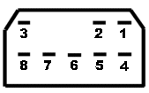
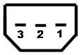
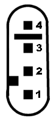
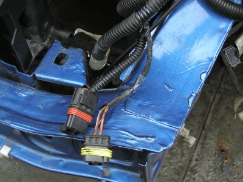
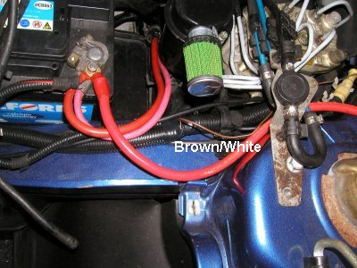
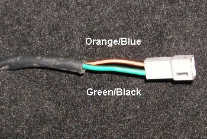
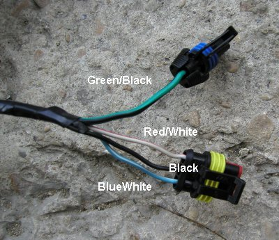
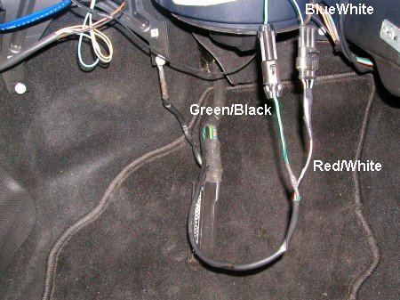

Fitting a Coupe 16VT wiring loom into a Tipo 16V
The Coupe 16VT (and 20V & 20VT) ignition system comes with a keycode system. This is an electronic
engine immboliser built into the ECU. This comprises of three parts:
- A keycoded ECU
- A keycode unit
- Keys with built in passive transponders
When the ignition is switched on the ECU asks the keycode unit for the ignition
key's code. The keycode unit switches on the keycode warning light and inquires from
the key it's code via the antenna
built around the ignition barrel. This code is sent to the ECU via a single serial
connection. If the code is recognised by the ECU the engine will start and the keycode
unit will switch off the keycode warning light.
In order to transfer this system to a Tipo 16V you need to make sure that you take
the above components from the donor Coupe. The keycode unit is a small yellow
box about 10cm square located in the OS end of the dashboard.
When you remove it ensure that you take the entire antenna and connector intact. You will
also need the 8 pin connector but it can be cut from the wiring loom ensuring that you
leave enough cable length to allow it to be wired to the Tipo loom.
You will also need the 4 pin plug that fits into Connector C below on the Coupe
ignition loom. When you are removing the Coupe ignition loom from the donor car
cut this connector off the Coupe.
Connector A
This is one of the two connectors that goes into the yellow keycode unit box behind
the drivers side of the dashboard. It connects the keycode unit to a power supply,
the keycode warning light and the ECU.

- Not Connected
- Code indicator light (White/Yellow)
- +12V permanent supply (Red)
- Ground (Black)
- Not Connected
- Serial communications to ECU (Grey/Green)
- Not Connected
- +12V Switched (Blue/Red)
Connector B
This is the other one of the two connectors that goes into the yellow keycode
unit box behind the drivers side of the dashboard. It connects the keycode unit
to the attenna which sits around the ignition barrel.

- Aerial (Black)
- Not Connected
- Aerial (Black)
Connector C
This is found at the rear of the engine in the middle at the top. It connects the
ignition wiring loom with the cars main wiring loom. It has several purposes, to
allow the main wiring loom to switch on the main ignition relays, provide
a pulse to the cars rev counter and allow the keycode unit to communicate with
the ECU.

- +12V Switched (Orange)
- Rev counter signal (Brown/White)
- Ground (Black)
- Serial communications to ECU (Grey/Green)
Air Conditioning
There is a single connector on the Coupe loom at the back of the engine in the middle.
It's connected via a Grey/Green cable to pin 21 of the ECU. This does not need to
be connected to anything on the Tipo as it's for the air conditioning. It tells the
ECU that the air conditioning is switched on and the ECU can compensate for the
extra load on the engine to prevent it stalling when idling.
Step by Step Instructions
- Locate the 3pin ignition connector and 4pin ignition wiring loom connector
on the Tipo wiring loom at the NSF of the engine. They should look like the following:

- Trace the Orange/White and Brown/White wires from these connectors
back to the large block connector
on the NSF of the Tipo wiring loom. The Orange/White goes to pin 7 and the Brown/White
goes to pin 8
- Cut the wires from the large block connector.
- Make tidy the ends of the wires where they were connected to the large
block connector. This is
not necessary as they won't be connected to anything but it looks neater.
- Throw away the 3pin and 4pin connectors that you just removed as you won't
need them.
- Locate on the other side of the large block connector the same two wires.
- Cut the wires from the large block connector.
- Make tidy the ends of the wires where they were connected to the large block connector. This is
not necessary as they won't be connected to anything but it looks neater.
- Follow the tipo wiring loom from the large block connector back to just behind the
battery.Open up the plastic wire wrap protection and locate the same Orange/White and
Brown/White wires.
- It should be possible to pull these wires back now they have been cut from the
large block connector without having to further open up the plastic wire wrap
protection. The following picture shows the Brown/White wire having been pulled back
through the plastic wire wrap protection and made good:

- Attach the Orange/White wire that you've just traced back
to pin 1 on Connector C (Orange).
When the ignition is switched on with the key this Orange/White wire becomes live. Pin
1 on Connector C is connected to pin 14 on the master ignition relay. Providing a
live signal to this causes the ignition loom to become live.
- Attach the Brown/White wire that you've just traced back to pin 2 on Connector C
(Brown/White). This allows the rev counter which is connected to the other end of
the main wiring loom to receive pulses from the ECU which is connected to pin 2
on Connector C.
- The Black wire on pin 3 of Connector C is an earth and the other end is connected
to the earth strap next to the ECU. It does not need to be connected to anything. I
think it's use was to provide an earth supply to whatever was connected to Connector C
when it was fitted on the Coupe.
- Position the yellow key code unit roughly where you want to install it so that
you get the lengths of the connecting wires right. I don't think the attenna will
fit around the Tipo ignition barrel as there doesn't appear to be enough clearance
in the steering column housing. Therefore you need to place it such that
the antenna will reach where you plan on placing the Coupe keys to start the car.
- Pin 4 (Grey/Green) on Connector C is connected
to pins 12 and 13 on the ECU and is used to enable the ECU to communicate with the
yellow keycode unit. The keycode unit is inside the car so you need to feed a
wire through the bulkhead to connect the two together.
- There is a good place to pass the wire through from the engine into the cabin.
Remove the windscreen wiper scuttle panel and in the corner of the near side
there is a bung.
- Peirce a hole through the bung and push a wire though.
- Connect one end of this wire to pin 4 on Connector C (Grey/Green)
and the other to pin 7 on Connector A (Grey/Green).
- That is all the work required in the engine bay. The next steps are to
connect up the keycode unit.
- Connect pin 4 (Black) on Connector A to an earth point.
- Connect pin 3 (Red) on Connector A to a permanent live supply.
- Connect pin 8 (Blue/Red) on Connector A to a switched live supply. See the
instructions immediately below before making good this connection.
- Pin 2 (White/Yellow) on Connector A is used for the keycode warning light.
The Tipo does not
have one built into the dashboard instrument display so you may want to wire
a regular 12V bulb up to this lead. The light should come
on for 0.7 seconds when the ignition is switched on and then go off if the key
is recognised. The keycode unit earths it's end of pin 2 when it wants to
switch on the light. The keycode light should come on even if the ECU is
disconnected.
- Connect one lead from a bulb to a switched live supply, You can use the
same wire as pin 8 on Connector A.
- Connect the other other lead from the bulb to pin 2 on Connector A.
- That is all the work required for the keycode unit. The next steps connect
up the fuel pump and the ignition warning light.
- The thick Green/Black wire, terminated
with a single pin connector, hanging down in the Tipo passenger footwell is connected to the fuel pump.
- The Blue/White lead, terminating in a 3 pin connector, also hanging down in
the Tipo passenger footwell is connected to the dashboard ignition warning
light. The red one that looks like a fuel injector.
- Connected to the Coupe ECU is a 2 pin connector with two wires attached to it,
a thick Green/Black wire and a Orange/Blue wire as seen in the picture below:

- As you can see the connections on the end of the Coupe ECU use different
connectors than the Tipo. There are three
choices here, make up an adaptor lead to connect the Coupe ECU to the Tipo,
adapt the Tipo ones to fit the Coupe ECU or adapt the Coupe ECU
to fit the Tipo. I believe the latter is the sensible approach.
- Cut off the 2 pin connector at the end of the Coupe ECU and throw it away.
- On the original Tipo ECU there should be a thick Green/Black wire connected
with a single pin plug on the end. Cut this off the Tipo ECU leaving enough
wire to allow it to be connected to the end of the matching wire, described
above on the Coupe ECU.
- For imformation only: The thick Green/Black wire attached to the ECU does not actually go to the
ECU but instead goes to pin 9 on the main ignition relay. When the ignition is
switched on the relay operates and switches on the fuel pump via this lead.
- On the original Tipo ECU there should be a 3 pin connector with
a Black, Blue/White and Red/White wire connected to it.
Cut this off the Tipo ECU leaving enough wire to allow it to be connected to the
end of the Coupe ECU. The connectors on the Tipo ECU look like this:

- Connect the Orange/Blue wire attached to the Coupe ECU, actually goes to
pin 27, to the Red/White wire on the 3 pin connector you've just cut off the Tipo ECU.
The connections between the Coupe ECU and the Tipo wiring loom should look like
this when finished:

- Job done.